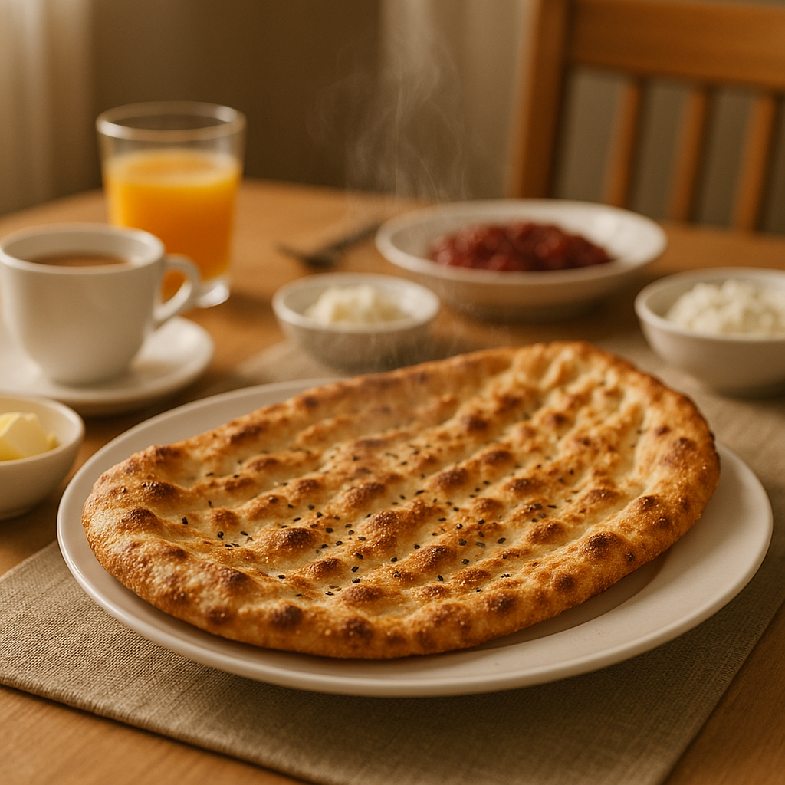

1. Executive Summary
Bread is the cornerstone of Iranian daily nutrition — yet, its production and distribution processes remain among the most outdated, unhygienic, and inefficient in the food industry.
FreshBread introduces a transformative approach: producing high-quality, standardized Iranian bread through industrial baking and IQF (Individual Quick Freezing) technology that locks in freshness, taste, and nutritional value. The bread is then distributed via a fully integrated cold-chain system — from factory to supermarket freezer, and finally to the consumer’s home freezer.
Families can enjoy truly fresh, healthy bread anytime, by simply warming the portion they need — eliminating waste, improving quality, and redefining convenience.
2. The Challenge
Despite its cultural and nutritional importance, Iran’s bread ecosystem faces structural challenges:
The result is an unsustainable model that wastes time, energy, and raw materials while underserving the modern consumer’s expectations for health, convenience, and reliability.
3. The Solution: FreshBread – IQF Frozen Bread
FreshBread revolutionizes the way bread is made, stored, and consumed in Iran:
Industrial-Scale Production
Bread is baked in hygienic, automated facilities under strict quality control and in standardized portion sizes suitable for daily household use.
IQF Technology
Each loaf is individually quick-frozen immediately after baking, preserving its aroma, texture, and nutritional profile without any additives or preservatives.
Cold-Chain Distribution
FreshBread is transported through refrigerated logistics to supermarket freezers and stored under optimal conditions, maintaining consistent quality from factory to consumer.
Home Convenience
Consumers keep FreshBread in their freezers and heat only what they need. In minutes, they enjoy warm, aromatic bread — fresh as if just baked.
4. Value Proposition
| Stakeholder | Key Benefits |
|---|---|
| Consumers | Fresh, hygienic, nutritious bread on demand; no queues, no waste. |
| Retailers | High-margin frozen food category with longer shelf life and reduced returns. |
| Golrang Group | A scalable, innovative product line aligned with sustainability and quality leadership. |
| Society | Reduced food waste, enhanced nutrition, job creation in modern production and logistics. |
| Environment | Efficient use of resources, recyclable packaging, and lower CO₂ emissions. |
5. Market Opportunity
- Iran’s daily consumption exceeds 200 million loaves, representing one of the world’s largest bread markets.
- Capturing even 2–3% of this market equals millions of households transitioning to hygienic, convenient bread.
- Rising urbanization and changing lifestyles increase demand for quick, reliable food solutions.
- Consumers are now familiar with frozen, ready-to-cook foods, easing adoption of frozen bread as a mainstream category.
6. Strategic Positioning
Brand Essence:
FreshBread stands for freshness, trust, and innovation — combining the soul of traditional Iranian bread with modern food science.
Brand Promise:
Always fresh. Always ready.
Positioning Statement:
A modern essential for every household — premium in quality, accessible in price, and reliable in experience.
Target Segments:
- Urban and semi-urban families
- Working professionals with limited time
- Hospitality, healthcare, and catering sectors seeking consistent quality
7. Business Model Overview
Production:
Centralized industrial bakeries leveraging Golrang’s food manufacturing expertise.
Distribution:
Integrated with Golrang’s cold-chain logistics and retail channels.
Sales Channels:
Supermarkets, convenience stores, and Golrang’s e-commerce ecosystem.
Product Lines:
- Classic Line: Traditional Sangak, Barbari, Taftoon, Lavash
- Functional Line: High-fiber, low-salt, fortified, or gluten-free breads
- Export Line: Packaged IQF flatbreads for regional and international markets
Revenue Streams:
Retail sales, institutional catering, and direct-to-consumer subscriptions.
8. Impact and Sustainability
Economic Impact
- Reduces national waste of flour, water, and energy.
- Creates jobs in advanced food manufacturing, logistics, and technology.
Environmental Impact
- Lower transportation emissions via cold-chain efficiency.
- Reduced plastic waste through recyclable packaging.
- Optimized use of resources from farm to table.
9. Strategic Fit for Golrang Group
- Perfectly aligned with Golrang’s mission to improve everyday life through innovation and quality.
- Leverages Golrang’s existing assets: production capacity, logistics network, and nationwide retail access.
- Reinforces the group’s position as a leader in food innovation, sustainability, and social value creation.
- Opens a new export-ready category for regional and global markets.
10. Conclusion
FreshBread is not just a new product — it is a systemic innovation that modernizes one of the oldest and most vital elements of Iranian life.
By merging tradition, technology, and sustainability, Golrang Industrial Group can lead a nationwide transformation: